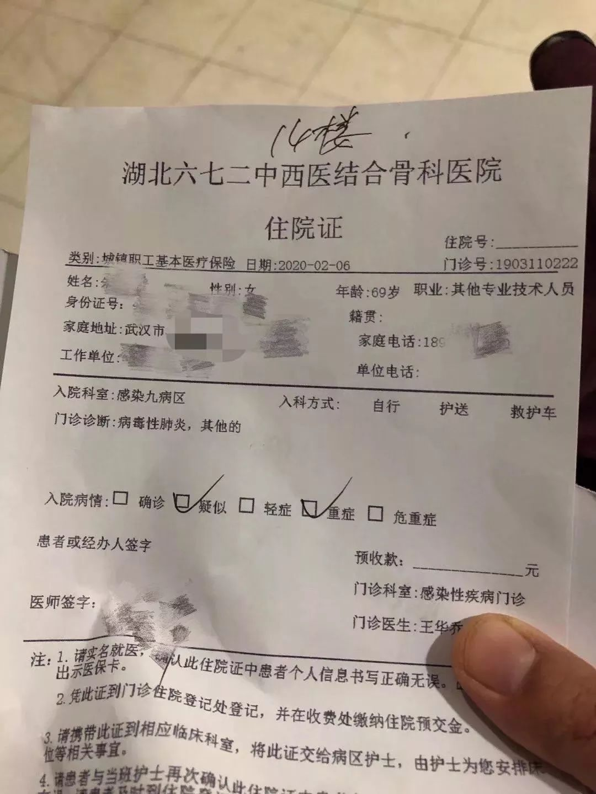
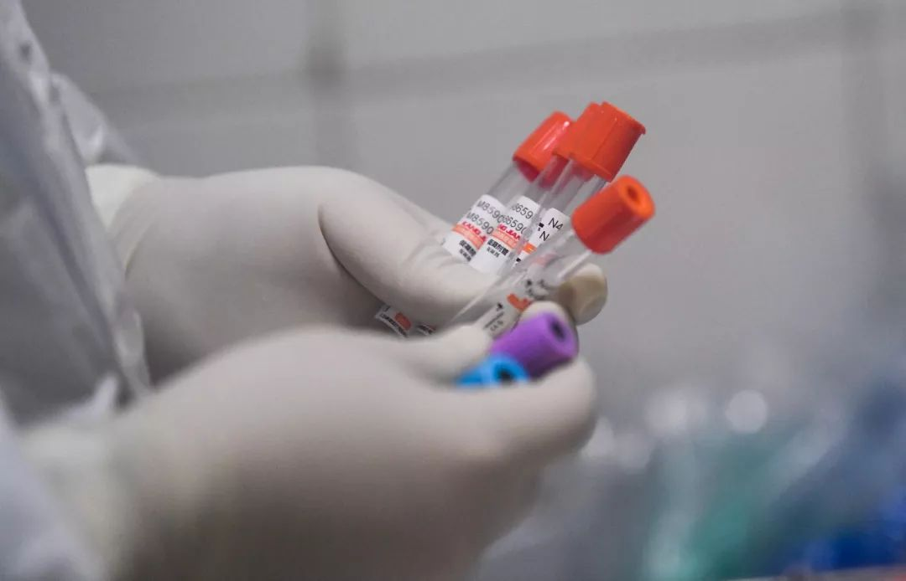
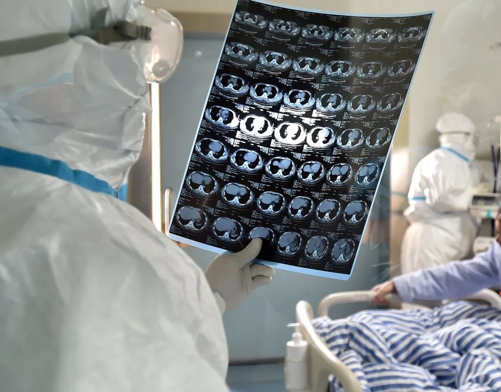

封面报道之二|疑似病人难题：谁来关心“移动的传染源”？
原文链接 备份链接 有多少疑似？ 326份CT检查报告单，除了60份不发热的其他病例，剩下的266份CT报告，136例显示“肺部感染，呈多发磨玻璃样高密度影”。1月22日，湖北省新华医院放射科医生李云华手颤抖着数完，沉默了许久。这些前一 …
蔡婷说：“大家都荒谬到这个程度了。”
2月5日下午，湖北省人民医院拥挤的门诊部，蔡婷排了3个小时的队。这家医院昨天做了1500份新型冠状病毒的核酸检测，43岁的蔡婷和母亲的样本，也在其中。现在，蔡婷全部心思都在这上面，一心盼着它是阳性。
“非常期待自己得的是新冠肺炎，盼着证明自己得病了，就怕它出个阴性的结果。”
几个小时后，蔡婷把诊断结果发给我：母亲，单阳，离确诊还差一个阳性指标。依然是高度疑似。而她自己的两项指标，却均为阴性。
常理来看，这或许不失为一个好结果。但一向乐观豁达的蔡婷告诉我，她当时崩溃了，“在医院里爆哭了一场”，但哭得抽不上气来，她知道，自己肺部明显有问题了。而母亲已经无法行动，得由她推着轮椅，在寸步难行的武汉，来回奔波。眼下这情形，再做一次复查，奔命不说，还无法预计何时能得到救治。
比起战胜疾病，武汉病人要战胜的对手实在太多了。

战斗状态
早在1月22日，蔡婷就在朋友圈发出了求助信息。
蔡婷的小姨在湖北省人民医院治疗妇科肿瘤时，出现了发热迹象，一开始院方发热门诊不接收，又无法提供转院协助，只要求出院。对化疗病人至关重要的PICC也没有护士敢做了。
小姨的检查结果显示，各项指标高度疑似新冠肺炎，第二天被送进了隔离病房，随后转至武汉第九人民医院。而与此同时，贴身照顾小姨半个多月的蔡婷，也发起了高烧，一路飙升至39°以上。
此时，整个湖北的疫情已经扩散，武汉医疗资源紧缺起来。她拨打120，但被告知需要自行联系医院，急救中心才能派车。蔡婷想到了小姨的情况，自己作为密切接触者，要求进入武汉九院做检查。
院方商量后，同意了她的请求，1月23日这天，急救车从中午排到晚上，终于在晚上9点钟把她送至九院。一夜折腾，她凌晨5点才走出医院大门，得到的结果是，CT和血常规正常，但不排除潜伏期。

蔡婷第一次发热进医院检查
此后多日里，蔡婷进入战斗状态。她自己和母亲均出现反复发烧，母亲越来越虚弱，几乎不能走路了。2月1日凌晨5点，烧到38.5°的蔡婷，拨打了120。20分钟后，车来了。但工作人员告诉她们，没来联系好医院和床位，病人没法送。她只好悻然下了车。
2月2日，蔡婷的CT检查报告单上，已经出现了新冠肺炎的诊断意见。此时，妈妈的CT结果也显示，肺部已经花白。诊断意见是双肺感染，考虑新冠肺炎。医生同情地告诉她，过两天再看有没有床，已经一个星期没有收过新病人了。而此时，母亲已经不能走路，无法久站，她多方求助，才买到一把轮椅。

蔡婷母亲的住院单
我跟她约采访，屡屡被各种突发意外打乱，一直未能进行，我只能看着她朋友圈里宣布自己如何解决一个个“超级不可能任务”。
2月3日傍晚，蔡婷在家中被一股冰凉的感觉唤醒，她发现自己的身体扑在地上，脸上浮肿，全是血。尿失禁，裤子也弄湿了。
她意识到是自己晕倒了，但不知道晕倒了多久。她拨打了求救电话，却发不出声。好在，熟人和陌生的网友都在帮她联系了社区的车队。在武汉第三医院光谷院区，蔡婷站立不住，冷汗直冒，感觉又要休克了。大概是所有医疗资源和精力都用于发热，使得这里连外伤都无法处理，而抢救都需要排队。
在抢救室门口，她听见一片巨大的安静中传来一阵悲切的哭声，而抢救室里，静得可以听见那些微弱的呼吸。

武汉大学中南医院重症隔离病房
医生告诉她，这次休克，可能是高热引起，但没有床位，而且已经是深夜十一点，医院整体消毒，打针还需要再等几个小时，交了钱的蔡婷，也只好放弃了。
只有一个办法了，做核酸检测确诊。原本她打算第二天推着轮椅带母亲去，但她现在连哭的力气都没有了。
2月4日，几经周折，她带着母亲去省人民医院做了核酸检测，得到一份看似喜人的结果，却令她“崩溃”了。

通往病房的唯一凭证
过去十多天来，核酸检测仍是大量求助者通往病房的唯一凭证，没有经过核酸检测确诊的病人，只能等。申请核酸检测，一度是耗时耗力的持久战。截止2月7日，微博上的“肺炎患者”超话下，就有超过1100条求助信息，其中大多数均与核酸检测相关。
20岁女孩陈琦是其中之一，她刚学会开电瓶车，载着咳嗽不止的父亲，跑遍了所有医院，靠着打针，维持着生命。父亲从大年三十开始出现发热症状，最近三天，父亲开始咳血，已经喘不过气了，高烧一度超过40度。
他们在武汉七院排到了核酸检测的名额，但要三天后才能检测，四天后才有结果。陈琦和家人慌张了，感觉父亲就要活不过明天了，根本等不起。
武汉实施网格化管理，发热病人上报社区，层层协调，并派送到对口的指定医院就诊。但社区的回复大多是，“耐心等待”。到了2月2日，父亲眼看不行了，陈琦的姐姐和妈妈在社区和街道闹了一回，街道才肯派车送他们去江对岸的协和医院做核酸检测。
“他们给我爸弄来了一趟辆救援车，但我爸是感染者，一家人只能坐在车厢外面，像偷渡一样。”

武汉火神山医院，医护人员将患者送入病房
陈琦的父亲一直以来没得过什么病，不抽烟也不喝酒，是家里唯一的顶梁柱，有着天不怕地不怕的性格。大年初一开始呕吐时，他才勉强戴上了口罩。但这场病似乎打倒了他，情绪也变得不稳定了，更不愿去回忆自己如何染上病毒。
现在，距离检查完已经过了48个小时，通知没能等来，一家人有点小失落。陈琦说：“现在举全国之力，都在救治新冠肺炎，如果我爸得的不是这种病，这个节骨眼上，那就没人管了。那我爸就没救了？”
疾控中心的电话最终在2月4日这天打过来了，告知父亲确诊，并赶快上报。陈琦这才稍微宽心：有救了。
比起多数患者核酸检测的曲折，徐敏的婆婆陈慧要幸运得多。
徐敏的婆婆2月4日日间做了第二次CT检查，肺部已经完全磨玻璃化了，医生停了婆婆的莫西沙星注射，并说，已经没用了，只有住院打球蛋白。
这就陷入了一个怪圈：只有住院部才有开球蛋白的权限，而住院部说，只有疫情指挥部才能调配床位，而要拿到疫情指挥部调配的床位，只有通过社区上报。但社区告诉他们，请耐心等待。
绝望的情绪弥漫开。视频里，一开始陈慧还能跟孙子说笑，最近越来越萎靡。婆婆看得懂肺片，口里叨着“信命了”，不想再跑了。
无奈之下，一家人只得自己买球蛋白。2月4日晚上去普仁医院，试着看看能否打自己带的免疫球蛋白，答案是他们不出所料的：不能打。意外的是，医生告知，这天下午刚到了80个试剂盒子，临时增加的。

2月2日，武汉市已经下达新的政策，要求对新冠肺炎确诊、疑似、发热及密切接触者“四类人员”集中收治和隔离。第二天，社区工作人员给她发来信息，问她婆婆去不去隔离，但看到隔离不提供医治条件，她就放弃了，心里也害怕起来。
婆婆需要的是抢救，需要打球蛋白。现在希望寄托于那张核酸检测结果了。令人焦急的是，48小时过去了，检测结果还不见出来。而此刻对于病人来说，一分一秒，都是生死之间。

等得到的、等不到的
2月4日，父亲在电话里告诉了郝明奶奶的核酸检测结果。听到“阴性”这个词，郝明心里一凉：完了，全完了。
奶奶78岁，做了三年的透析，12月份开始发烧，诊断出肺炎。感染未见好，但好在烧退了，直到武汉新病毒疫情爆发，再去中南医院做CT时，肺部已经严重感染。医生怀疑是新型冠状病毒，让他们回家等通知，并停了奶奶的透析。
2月4日本该进行的透析没有做成，奶奶身体状态急速恶化。他们找到梨园医院，做了核酸检测，结果是阴性。拿着这份报告，郝明和家人再次回到中南医院，以图证明奶奶没有新型冠状病毒的传染性，可以继续做透析。不过，医生断定这就是新冠肺炎，核酸检测准确率并不高，要求去指定的武汉市第七医院重新检测。
就在此时，家中的奶奶陷入了休克，对声音和晃动失去了反应，人也无法进食，更无法去做核酸复查。他们打了三次120，均被告知需要先联系到愿意收治的医院，否则无法派车。但普通医院不敢收治，武汉四家指定医院对发热透析病人，均需要核酸检测确诊才能收治。
“武汉绝大部分医疗资源和床位，都集中用于新冠肺炎，如果是阴性，基本上没人会搭理。”
郝明的奶奶，就这样一直躺在家中。
一天前的2月5日下午，国家卫健委发布《新型冠状病毒感染的肺炎的诊疗方案（试行第五版）》，规定将CT影像结果作为临床诊断病例的诊断标准（只限于湖北省内），这就意味着，核酸检测这一唯一标准，就此终结了。也就是说，按照这个方案，郝明的奶奶将会得到救治，但医疗资源能否跟上，也许又要另当别论了。

医生在查看患者肺部CT片
汉阳区的彭昱娴在网上发布外婆的求助信息后，一位自称当地舆情网的工作人员联系她，告知了国家发布的新文件：重症疑似患者也会收治。有床位就能去，但没床位还是没办法。
彭昱娴的外婆肺部严重感染，但核酸检测结果却是阴性，妈妈和自己都隔离了，作为阴性病人的外婆，因为肺炎，各类慢性疾病全引发了，整日在家喊着心脏疼痛，全家人也跟着痛。
2月4日结果显示，妈妈和自己的核酸检测结果均为阳性。确诊了。妈妈情况危重，呼吸困难，无法行动，说一两个字，就喘气不止。从CT影像看，妈妈的肺部白化，已经发展成重症，最后由武汉市第五医院收治。
对于彭昱娴来说，确诊，是一个早就知道的结果，终于得到了医学上的认定。一家人从1月20日开始，就陆续出现症状，妈妈是第一个患者，随后是外婆，没有病床，只能居家隔离。都是至亲至爱之人，悉心照顾的情感联结大于个人安危的顾虑。“又不是专业人员，防护措施做得不够”，家庭内部的聚集感染，成了一个必然的局面。
彭昱娴1月26日出现症状，28日去照CT，肺部有磨玻璃，但她身体状态还好，医生同样建议她，先回家隔离。期间，病情反反复复，时有好转。
确诊后的第二天夜里，也就是2月5日夜里，彭昱娴刚躺下，就有电话打来，说，一小时内来接你去隔离。凌晨1点过，她收拾东西上了车，被接到汉阳区的一个集合点，等齐了其他患者，最后由一辆公交车，转到了武汉展览中心的方舱医院。
那里很空旷，用木板隔了隔间，分出了几个大病区。3点钟，她被安排到了5号病区。一个病区有二十张床，隔着半米左右的距离，这里隔离的主要以轻症患者为主，但也有咳嗽声此起彼伏。

江汉方舱医院
出发的路上，下着雨，彭昱娴拍下雨滴朦胧的车窗，发了朋友圈：在路上，得到一个早就知道的结果，可是会相对宽心很多。
但一说到80多岁的外婆，她就哽咽起来，泣不成声。被隔离后，她无能为力了。她只能等着舅舅和父亲传来好消息。
《南风窗》记者作为某个救援队的志愿者，2月4日以来，开始跟访陈琦、徐敏、郝明这样的求助者，并试图帮他们对接到医疗资源。好的局面是，随着火神山、雷神山、各大方舱医院建设完成并投入使用，床位紧缺的问题，正在得到缓解。
但遗憾的是，有时电话响起，还没问出对方问题是否得到解决，对方就说，可能不需要了。显然，一些患者并没有跑赢这样的速度。有人沉默着地挂掉电话，也有人愤怒地骂着。
2月6日凌晨，郝明给我发了消息：当地卫健委告诉我们，住院单已经开好，第二天就可住院。
最后他说：“可惜奶奶等不到了。”
到了第三天，徐敏的婆婆陈慧终于确诊了，他们盼来了阳性的核酸检测结果，但不幸的是，60岁的婆婆，依然没有等来床位，2月7日晚间，徐敏在朋友圈下午公布了婆婆离世的消息。
好消息也有。2月6日晚间，蔡婷就跟我分享了喜讯，这天，她跟小姨通了电话，小姨的声音健康得如同做化疗之前那样。她的小姨，一个癌症化疗患者，免疫力极度低下的情况下，似乎痊愈了。目前，小姨已经做了一次核酸，结果为阴性，如果等来第二份检测结果也是阴性，便可获准出院，只需在隔离区住一个星期后，即可回家了。
另一边，尽管蔡婷妈妈只是高度疑似的单阳患者，但按照最新的诊疗方案，这种情况也能报住院。6日下午，下着雨，没有车，她推着轮椅，推了一个多小时，总算把69岁的妈妈推进了医院。
她回到家里，身疲力竭，准备着好好休息之后，重新投入战斗。
最新消息
医疗物资紧张、检测确诊艰难的状况正在得到缓解。
这几天，火神山、雷神山医院和方舱相继投入使用，集中收治重症、轻症患者。火神山医院已于2月4日开始正式接诊、收治新冠肺炎的确诊患者，4天后的今天，雷神山医院也交付使用，首批医疗队员已经进驻，今天就会开始收治患者。两家专门医院共计床位2500张。
从2月3日晚开始，武汉紧急抽调20个省大型三级综合医院的医学救援队，将武汉市体育场馆、会展中心等13处逐步改造为“方舱医院”，用于集中收治新冠肺炎轻症患者。目前，武汉会展中心、洪山体育馆、武汉客厅建设的三个方舱医院，逐步投入使用。
对于部分发热患者因客观原因无法确诊，难以得到有效的隔离和救治的情况，武汉市新冠肺炎防控指挥部提出“应收尽收、应治尽治”的原则，要求确诊患者必须实行集中收治，疑似患者必须实行集中隔离，无法明确排除可能的发热患者必须实行集中隔离观察，确诊患者的密切接触者必须实行集中隔离观察。
同时，全国各地对武汉的驰援从未停止。据2月6日湖北省召开的新冠肺炎疫情防控工作新闻发布会的情况说明，目前共有96支医疗队的9061名医疗队员支援武汉的医疗救治工作。针对各个市州医疗资源相对紧张的实际状况，11支医疗队，1535名医务人员也被分配到黄冈、鄂州、孝感、咸宁、荆州、荆门、襄阳等10个地市。
（文中部分人名为化名）
作者 | 南风窗记者 何承波
编辑 | 李少威
排版 | GINNY
南风窗新媒体出品
_
_

_
_

_
猜你还想看
_
围观
故事
热文
点击购买最新一期《南风窗》
武汉加油！

原文链接 备份链接 有多少疑似？ 326份CT检查报告单，除了60份不发热的其他病例，剩下的266份CT报告，136例显示“肺部感染，呈多发磨玻璃样高密度影”。1月22日，湖北省新华医院放射科医生李云华手颤抖着数完，沉默了许久。这些前一 …
原文链接 备份链接 根据国家卫健委的通报，截至1月23日零点，共统计到国内新型冠状病毒感染的肺炎确诊病例571例，其中超过400例来自湖北。死亡17例，均来自湖北。此刻的武汉面临以下问题：试剂盒数量不够、确诊艰难、床位短缺、高度疑似患者 …
原文链接 备份链接 _ 新冠肺炎核酸检测阳性比率低，与病情发展阶段、采集流程是否规范、试剂盒的质量相关。为减少可能的“漏诊”，专家建议对不同厂商的试剂盒进行系统对比 _ 文 |《财经》记者 孙爱民 言清 王小 编辑 | 王小 近日在湖北 …
原文链接 备份链接 大约50名患者和30名医务人员 确诊感染了新冠肺炎 2月8日，《中国新闻周刊》独家获悉，武汉市精神卫生中心出现院内感染。据来自该院内部的消息源透露，至少有大约50名患者和30名医务人员确诊感染了新冠肺炎。 ***出 …
原文链接 备份链接 【财新网】（记者 黄蕙昭 综合）武汉市中心医院门前放满花束。7日凌晨3点48分，武汉中心医院官微发布李文亮医生抢救无效过世的消息。当日，手持花束的市民自发前往武汉中心医院，悼念在工作岗位被感染的李文亮医生。他曾因“发 …